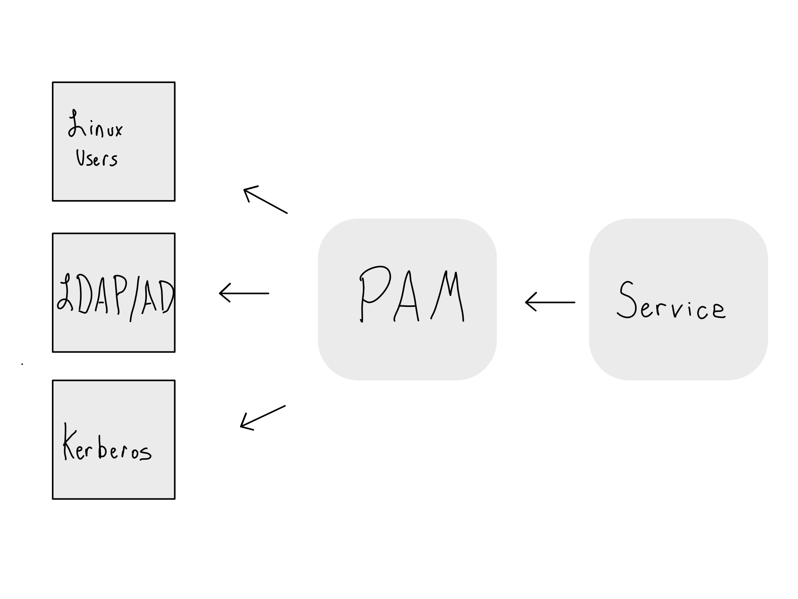
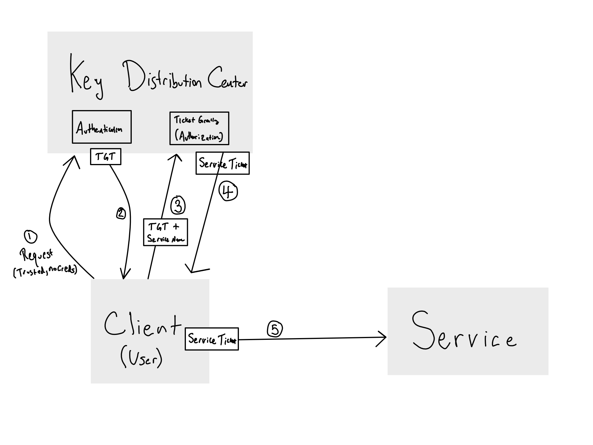
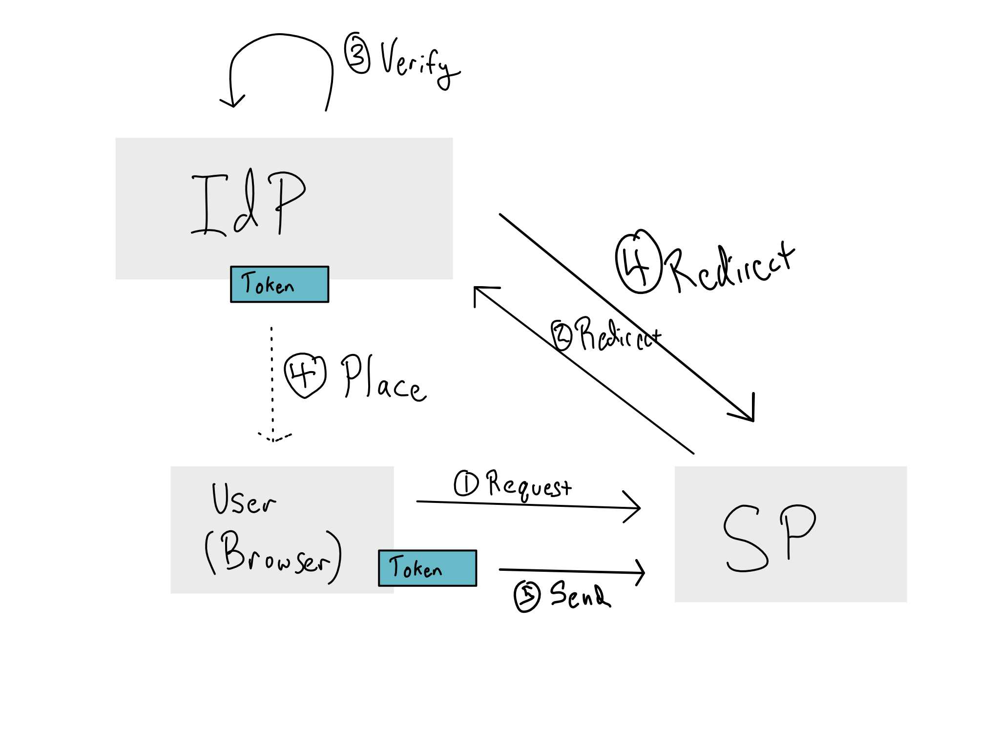
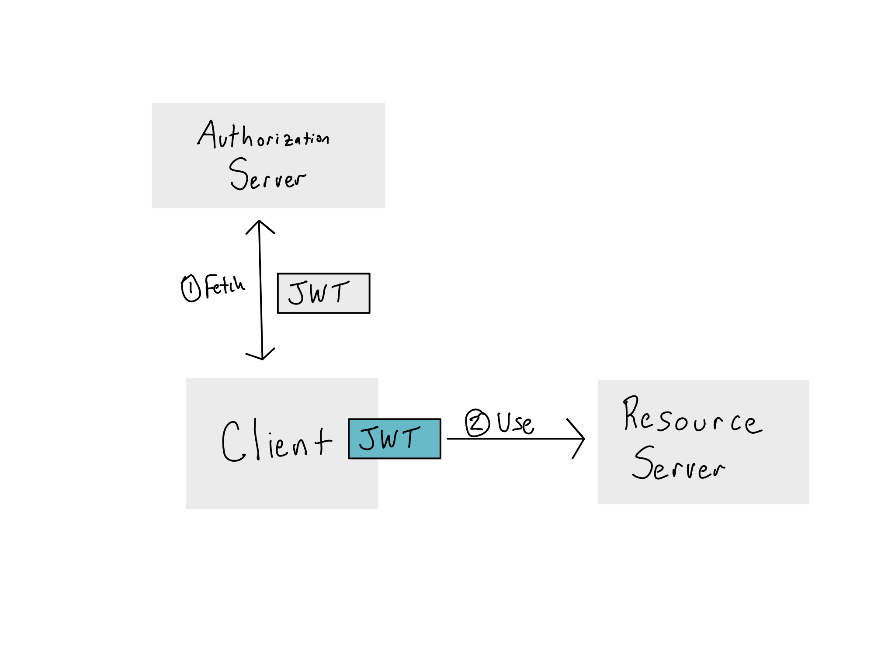

Appendix A — Auth Technologies
Chapter 18 was all about a conceptual understanding of how auth works and what SSO is. In that chapter, we briefly mentioned a few technologies used to do auth, including LDAP/AD, SAML, and OIDC/OAuth2.0.
In this chapter we’ll get a little deeper into the actual technologies that underlies different auth. Having a basic understanding of these technologies can be helpful when you’re talking to IT/Admins. That said, it’s definitely beyond the scope of most people’s need to understand, which is why this is an appendix.
In terms of auth technologies, the biggest distinction is between “token-based” systems that can do SSO and others that that cannot. There is also a distinction between systems that are considered modern and those that are more legacy systems.
Auth Technologies by Type
| Auth Technology | Credential-Based | Token-Based | “Modern” |
|---|---|---|---|
| User Database | ✅ | ❌ | ❌ |
| Linux Accounts | ✅ | ✅ | ❌ |
| LDAP/AD | ✅ | ❌ | ❌ |
| Kerberos | ❌ | ✅ | ❌ |
| SAML | ❌ | ✅ | ✅ |
| OIDC/OAuth2.0 | ❌ | ✅ | ✅ |
As we went over in Chapter 18, the basic distinction is that in credential-based systems, users provide their credentials to every system to login. The system passes the credentials along to a central store where they’re verified and authentication is returned. Authorization has to be done at the service level.
That’s different than a token-based system. In a token based system, users get a token directly from a central authority. They then take that ticket to each system when they try to access it. The system checks the validity of the ticket and responds accordingly.
This sounds like a subtle difference, but it’s extremely powerful. In a credential-based system, users have to provide their credentials to each service. This means the service has to be secure enough for those credentials. If you’ve just got a token or ticket, you don’t have to trust the service nearly as much because it never sees your credentials.
The other huge distinction is about session expiration. In most systems, you don’t have to re-authenticate every single time you access it. In a credential-based system, that means that you usually trade your credentials for a cookie issued by the service. Again, you’ve got to trust the service to properly issue and expire that cookie. And even if you trust the service, you’ve got to separately set the timeout for each service. And if you want to revoke it, no can do.
That’s very different from token-based systems, where the tokens issued by the central authority regularly expire and have to be re-created. This generally means that it’s much easier to expire and revoke token-based systems compared to credential-based ones.
A.1 User Database
Many pieces of software come with integrated authentication. When you use those systems, the product stores encrypted username and password pairs in a database.
These setups are often really easy from an admin perspective – you just set up individual users on the server.
However, the flip side is that users have one more username and password to remember, which is annoying for them. Moreover, if you have more than a few users, or the system is one of more than a few, it’s hard to manage users on a lot of different systems. It can be a real pain to create accounts on a ton of different systems when a new person joins the organization, or to remove their permissions one-by-one when they leave.
For this reason, most IT/Admin organizations strongly prefer using some sort of centralized identity store.
A.2 Linux Accounts
Many pieces of software – especially data science workbenches – are able to look at the server they’re sitting on and use the accounts on the server themselves.
Pluggable Authentication Modules (PAM) is the system that allows Linux-based authentication. As of this writing, PAM is the default authentication method for both RStudio Server and JupyterHub.

Conceptually PAM is pretty straightforward. You install a service on a Linux machine and configure it to use PAM authentication from the underlying host.
By default, PAM just authenticates against the users configured on the Linux server, but it can also be configured to use other modules to authenticate against other systems – most commonly LDAP/AD or Kerberos. PAM can also be used to do things when users login – the most common being initializing tokens or tickets to other systems, like a database.
PAM is often paired with System Security Services Daemon (SSSD) to automatically create Linux users on a server based on the identities stored in an LDAP/AD instance.
Though conceptually simple, reading, writing, and managing PAM modules is quite painful. Additionally, as more services move to the cloud, there isn’t necessarily an underlying Linux host where identities live and PAM is generally considered a legacy technology.
A.3 LDAP/AD
For many years, Microsoft’s Lightweight Directory Access Protocol (LDAP) implementation called Active Directory (AD) was basically the standard in enterprise authentication. As a credential-based system, it is increasingly being retired in favor of token-based systems like SAML and OAuth2.0.
When you login to a service with LDAP, it uses the ldapsearch command to to look you up. LDAP is a protocol, like HTTP. In addition to the query, LDAP sends a set of bind credentials to validate that it’s allowed to be looking things up in the server.
LDAP can be configured in single-bind mode, where it uses the user’s credentials as the bind credentials. More often, LDAP is configured in double-bind mode, where there is a dedicated service account for binding.

To give a little more color, let’s look at the results from an ldapsearch against an LDAP server.
Here’s what my entry in a corporate LDAP directory might look like this:
cn: Alex Gold
mail: alex.gold@example.com
mail: alex.gold@example.org
department: solutions
mobile: 555-555-5555
objectClass: PersonYou’ll note that LDAP sends back a lot of information! This is how authorization is done with LDAP – the service is configured to inspect the items that come back from the ldapsearch and do authorization accordingly. This makes it possible to do authorization, but it’s not nearly as tidy as with a token-based system.
One of the things LDAP excels at relative to token-based systems is the ability to do lookups ahead of time. Because LDAP is a database, you can do a search for users – for example to make accounts for them – before they show up. In contrast, token-based systems don’t know anything about you until you show up for the first time with a valid token.
An example where this matters is if you have a service that itself controls authorization. For example, in Posit Connect, you can assign authorization to see certain apps and reports inside Connect. If you’re using LDAP, you can run a search against the server and add them before they ever log in. If you’re using a token-based system, you’ve gotta wait for them to show up. There are ways around this, but they generally don’t come out-of-the-box.
A.4 Kerberos Tickets
Kerberos is a relatively old token-based auth technology for use among different enterprise servers. In Kerberos, encrypted tokens called Kerberos Tickets are passed between the servers in the system.
Though Kerberos is freely available, it was widely adopted along with Active Directory, and it’s used almost exclusively in places that are running a lot of Microsoft products. The most frequent use of Kerberos tickets is to establish connections to Microsoft databases.
Kerberos works by sending information to and from the central Kerberos Domain Controller (KDC).
When a Kerberos session is initialized, the service sends the users credentials off to the KDC and requests something called the Ticket Granting Ticket (TGT) from the KDC. TGTs have a set expiration period. When they expire, the client has to request an updated TGT.
This is one reason why Kerberos is considered quite secure - even if someone managed to steal a TGT, they’d only be able to use it for a little while before it went stale and could be revoked.
When the user want to access a service, they send the TGT back to the KDC again and get a session key (sometimes referred to as a service ticket) that allows access, usually with a specified expiration period.

It’s worth reiterating that Kerberos is used exclusively inside a corporate network. This is one reason it’s still considered secure, even though it’s old. On the other hand, because everything has to live inside the network, it doesn’t work well for providing access to services outside the network, like SaaS software. For that reason, Kerberos is considered a legacy tool.
A.5 Modern systems: OAuth + SAML
These days, most organizations are quickly moving towards implementing a modern token-based authentication system through SAML and/or OAuth.1
The way both systems work is that you go to login to a service and are redirected to the SAML/OAuth system to seek a token that will let you in. Assuming all goes well, you’re granted a token and go back to the service to go do your work.
There are a few meaningful differences between SAML and OAuth that may help in conversations about these systems with Enterprise IT folks.
Most of these differences stem from the origin of the technology. The current SAML 2.0 standard was finalized in 2005 – roughly coinciding with the beginning of the modern era of the web. Facebook was started just the prior year.
OAuth is the next generation. It was started in 2006 and the current 2.0 standard was finalized in 2013.
Where SAML was designed to replace older enterprise auth technologies like LDAP/AD and Kerberos, OAuth was designed with the web in mind. People were trying to solve the problem of how to avoid having usernames and passwords for each individual site you might access without giving those sites the usernames and passwords of more sensitive sites.
You might’ve used SAML today if you logged into a SSO service for work. In contrast, you’ve almost certainly used OAuth today. Any time you’ve used a Login with Google/Facebook/Twitter/GitHub flow – that’s OAuth.
While OAuth is the default on the web, it’s still somewhat newer in an enterprise context. Increasingly, cloud services are adopting OAuth based auth patterns and many popular database providers are adding the ability to use OAuth.
SAML is XML-based while OAuth uses JSON Web Tokens (JWT). In both cases, the tokens are usually cryptographically signed. SAML tokens may be encrypted, while JWTs are usually unencrypted and signed. This makes OAuth somewhat easier to debug as JSON is easier to read than XML.
SAML is a user-centric authentication tool, while OAuth is an application-centric authorization tool. The difference is subtle, but meaningful. For example, let’s say you’re trying to access your organization’s data science workbench. If I was using SAML, I would acquire a token that says “the bearer of this token is Alex Gold”, and it would be up to the workbench to know what to do with that. In contrast, an OAuth token would say, “the bearer of this token should get these specific permissions to Alex Gold’s stuff in this application”. That means that OAuth can be used for authorization at a much more granular level.
Implementing SSO to the “front door” of a data science service, like your data science workbench or hosting platform is pretty standard these days. Right now, the industry is strongly heading in the direction of “second hop” auth. The idea is that when this works right, you log into the front door of your data science server with SAML or OAuth and then access to data sources like databases, APIs, and cloud storage is handled automatically on the back end – no need for users to (insecurely) input credentials inside the data science environment.2
TODO: image of passthrough auth
Very often, IT/Admins describe this experience as “passthrough” auth. The issue is that SAML and OAuth tokens can’t be passed through to another service. SAML tokens are specific to the service provider who asked for them and OAuth tokens describe particular authorizations for the bearer to a particular service.
In contrast, a JWT can be issued to any entity and every single request made is accompanied by the OAuth JWT. For example, if you’ve accessed Google Sheets or another Google service from R or Python, you’ve gone through the JWT acquisition dance and then attached that JWT to every request to prove it’s authorized. Similarly, cloud IAM experiences are based on passing JWTs around.
This means that there’s always a need to go back to trade in an existing token for a different one for the service you actually want to access. This is almost always an OAuth JWT. Increasingly, data science services are implementing these flows themselves so it does happen automatically, but in some cases you’ll have to figure out how to do the token exchange manually.
These days, many organizations are caught in the middle of this work - they are probably using SAML to access many systems and may have mandates to move towards credential-free communication to data sources, but very few have fully implemented such a system.
Here are quick overviews on how both SAML and OAuth work.
In SAML, the service you’re accessing (token consumer) is called the service provider (SP) and the entity issuing the token is called the SAML identity provider (IdP). Most SAML tooling allows you start at either the IdP or the SP.
If you start at the SP, you’ll get redirected to the IdP. The IdP will verify your credentials. If all is good, it will put a SAML token in your browser. The SAML token contains claims – information provided by the SAML IdP.

The OAuth flow is a little more parsimonious. In OAuth, the service you’re trying to visit is called the resource server and the token issuer is the authorization server. When you try to access a service, the service knows to look for a JWT that includes specific claims against a set of scopes defined ahead of time.
For example, you may claim read access against the scope of events on Alex’s calendar.
If you don’t have that token, you’ll need to go to the authorization server to get it. Unlike in SAML where action is all occurring via HTTP redirects and the SAML token must live in the person’s browser, OAuth makes no assumptions about how this flow happens.
The authorization server knows how to accept requests for a token and the resource server knows how to accept them. The process of requesting and getting a token can happen in a number of different ways that might include browser redirects and caches, but also could be done entirely in R or Python.
This is why OAuth is used for service-to-service communication.
